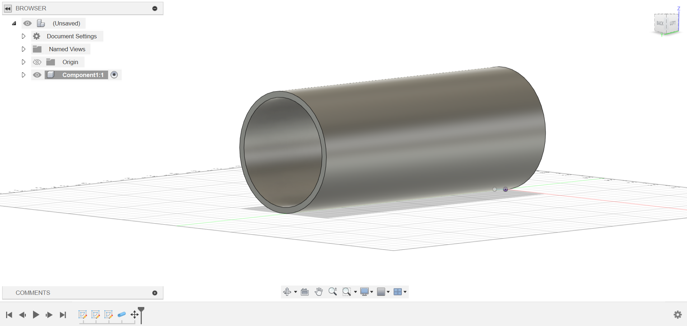
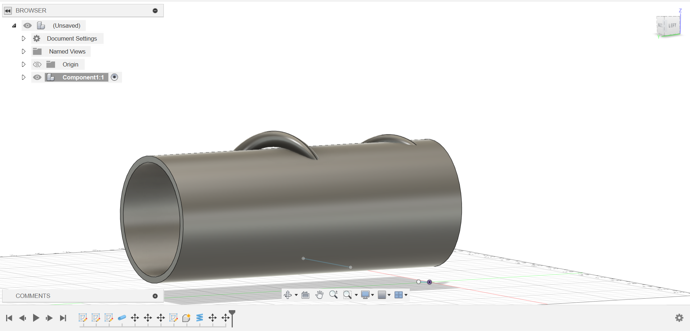
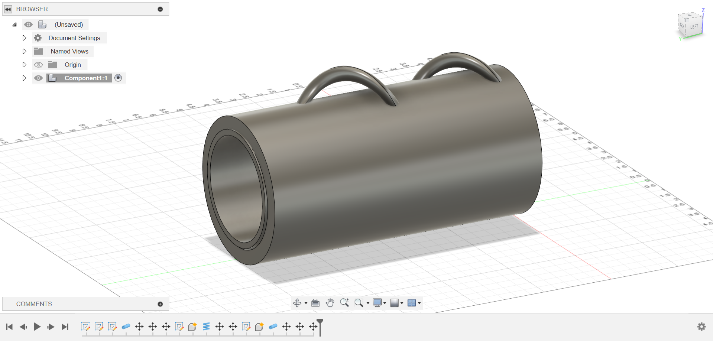

The Beginning
I decided to us the CAD software Fusion for my 3D model as it is the program I am most accustomed to and it would for a smooth and quick phase of designing a very rough 3D model of my final project. This software also provides me with tools that make the rough idea/design in my head very easy to execute saving me a lot of time and effort. Below will be the process taken to finish the rough 3D model I have created for the final version of my project.
Step 1
This is the first step of my process I wanted to make a quick sketch of the area that wrapped around the forearm to the wrist. Later this will become the layer of cushion between the main part that actually wraps around the forearm and wrist. I used the pipe function in Fusion 360 to mimic the shape of the arm and created a section that is hollow around 7 inches to fit the circumfrence of the arm. This section was also extended out about 10 inches to fit the length of half of the forearm to cover the tendons and muscles that are used in the wrists.
Step 2
In this section I wanted to design a piece to adjust the tightness of the device on the user to allow it to become more adaptable to each person rather than having a one size fits all situation. This is obviously a very rough idea of how I want it to look expect it to work similar to a tightener found on some backpacks or carry on materials which allow you to adjust the height or circumfrence of something to make it fit the user. To do this I used the coil funtion on Fusion and drew a circle that was around 3 inches in diameter and adjusted it to fit on the pipe I had already created. I want this component to stick out of our device allowing it to be easily acessible to the user without interfering with any other parts.
The Final Component
This step was the final touch to my rough design I wanted the inner part which was seen on step 1 to be the cushion on the inside of the device to allow a more comfortable experience for each of our users. I created a similar component as found oun step 1 using the same pipe function in Fusion but made it slightly larger to beocme the new wxterior of our device. I also had to asjust a couple of other features on previous steps to fit the new exterior such as the coil function I had used on step 2. This is the very rough 3D design of what I want my final product to be but I will keep on wokring and pursueing more ideas which will most likely result in this desing to change heavily.